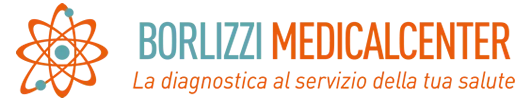

Aggiornamento ecografia · SIUMB, EFSUMB e WFUMB al servizio della pratica clinica
Aggiornamento Ecografia
Indice e filtri
Per settimana
Per tema
File
Fonti: siumb.it, efsumb.org, wfumb.org. Uso personale di studio e aggiornamento professionale.